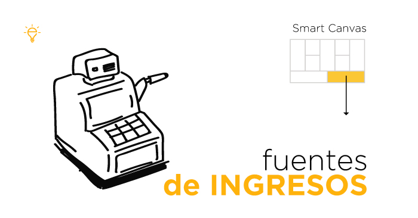

Flujos de ingreso

Licencias de uso
Ofrecer licencias de uso del software a agricultores y empresas agrícolas, con diferentes planes y precios según el tamaño de la operación y las funcionalidades requeridas.
Servicios de consultoría
Ofrecer servicios de consultoría y capacitación para la implementación y optimización del uso del software en las operaciones agrícolas.